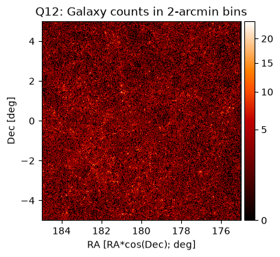
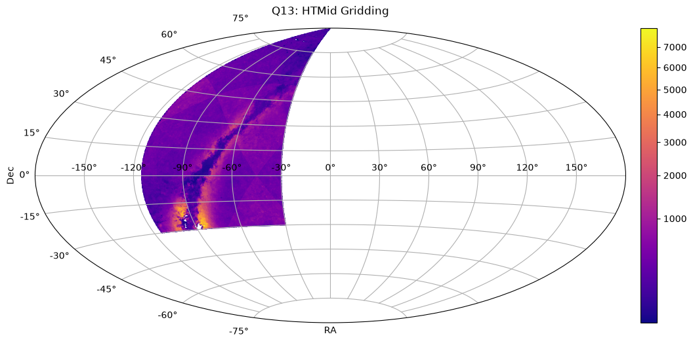

PanSTARRS “20 queries” using MAST’s TAP service: Spatial Binning#
Overview#
This notebook is part of a series demonstrating how to address a set of scientific questions using SQL-like Astronomical Data Query Language (ADQL) queries via a Virtual Observatory standard Table Access Protocol (TAP) service at MAST. This series aims to be an introduction to how complex queries can be executed using TAP (which might otherwise not be possible to specify with astroquery), and to be a resource for how to access MAST databases after the MAST CASJobs service is retired. The presented queries are drawn from 20 queries for SDSS as presented by Gray, Szalay, et al. (2002), adapted for the PanSTARRS PS1 database.
This notebook presents the subset of queries concerned with obtaining spatially-binned counts of objects, with both RA/Dec grids (with the local tangent plane approximation) and pre-computed hierarchical triangular mesh (HTM) ids combined with other filtering constraints.
For more examples of filtering techniques in TAP queries (including using bitmask filtering for data quality cuts), please see the PS1 “20 queries” Basic Filtering tutorial.
Learning Goals#
By the end of this tutorial, you will:
Understand how to obtain counts of objects in spatial bins using ADQL queries with TAP services.
Table of Contents#
Introduction#
Welcome! This notebook shows how to query MAST’s PanSTARRS data using Astronomical Data Query Language (ADQL). We address two scientific questions that rely on obtaining counts of objects in spatial bins (together with relevant selection criteria filtering). As you’ll see in our examples, MAST uses a standard Table Access Protocol (TAP) to handle these queries.
These queries are taken from (or closely modeled on) the “20 queries for SDSS” presented by Gray, Szalay, et al. (2002). Taken as a whole, this collection provides worked examples on how to leverage relational database capabilities to answer scientific questions, with the aim of providing concrete starting points and references for designing queries in other research applications, both for PanSTARRS and other large data volume missions (including Roman).
Imports#
This tutorial makes use of the following libraries:
numpy for numerical calculations
pyvo for querying the MAST catalogs via TAP
matplotlib.pyplot, PowerNorm, ScalarFormatter, MultipleLocator, make_axes_locatable, astropy.coordinates.Angle, astropy.units, for plotting data
time, datetime to determine query duration
import numpy as np
import pyvo as vo
import matplotlib.pyplot as plt
from matplotlib.colors import PowerNorm
from matplotlib.ticker import MultipleLocator, ScalarFormatter
from astropy.coordinates import Angle
from astropy import units as u
from mpl_toolkits.axes_grid1.axes_divider import make_axes_locatable
import datetime
import time
Connect to TAP service#
For all queries, we will be connecting to the PanSTARRS (PS1) Data release 2 (DR2) catalog. Specifically, we will use the ps1_dr2 catalogs available from the new postgres-backed TAP service, which offers improved performance relative to the legacy database (by factors of 100 or greater, in many cases).
See the PS1 documentation migration guide for information about the tables available with this new TAP service.
We begin by connecting to the MAST PanSTARRS DR2 TAP service.
(Note: See https://mast.stsci.edu/vo-tap/ for a full list of MAST TAP services.)
TAP_service = vo.dal.TAPService(
"https://mast.stsci.edu/vo-tap/api/v0.1/mast_catalogs"
)
Using the pyvo describe() method, we can access an overview of the methods, capabilities, and maximum result set size for this service.
TAP_service.describe()
Capability ivo://ivoa.net/std/TAP
Interface vs:ParamHTTP
https://mast.stsci.edu/vo-tap/api/v0.1/mast_catalogs
Language ADQL
ivo://ivoa.net/std/TAPRegExt#features-adqlgeo
CONTAINS
POINT
CIRCLE
ivo://edu.stsci.archive/std/exts#features-adql-bitwise
BIT_AND
The ampersand (&) operator performs a bitwise AND operation on two integer operands
BIT_OR
The vertical bar (|) operator performs a bitwise OR operation on two integer operands.
BIT_XOR
The circumflex (^) operator performs a bitwise XOR (exclusive or) operation on two integer operands.
BIT_NOT
The tilde (~) operator performs a bitwise NOT operation on an integer operand.
Output format application/json
Also available as json
Output format text/csv;header=present
Also available as csv
Output format application/xml
Also available as xml
Output format application/x-votable+xml
Also available as votable
Maximum size of resultsets
Default 100000 row
Maximum 100000 row
Capability ivo://ivoa.net/std/DALI#examples
Interface vr:WebBrowser
https://mast.stsci.edu/vo-tap/api/v0.1/mast_catalogs/examples
As expected, this service supports ADQL. You can also see the maximum result size is 100,000 rows.
Obtaining information about PanSTARRS catalogs#
In addition to the PanSTARRS DR2 catalogs documentation, we can search and explore information about the PS1 DR2 tables using MAST’s Catalog Schema Browser. This schema browser provides searchable listings of column names, units, and descriptions for the PS1 DR2 tables available via this TAP service. (The Catalog Schema Browser is also integrated within TIKE/RRN, and can be launched via its icon on the Launcher.)
We draw on this documentation and schema browser to identify the relevant tables & columns needed to address the queries below.
Q12#
Following Gray et al. (2002), but modifying by shifting one filter to the red (as PS1 has no u filter) and pushing one magnitude fainter (as PS1 is deeper than SDSS), Query 12 poses:
Create a gridded count of galaxies with g-r>1 and i<22.5 over -5<declination<5, and 175<right ascension<185, on a grid of 2’ arc minutes.
Compared to the original Gray et al. Query 12, we omit the component to “create a mask of the gridded region”, as it is unclear how to translate this for PS1. In our example, the included cuts help to mitigate contamination from non-galaxies or data artifacts.
Q12: Constructing the query#
In order to select galaxies down to such a faint magnitude limit, it is necessary to use the ps1_dr2.stack_object table, which is based on the co-addition of all available images. This table provides all required information: object positions, Kron magnitudes (to capture galaxies’ entire fluxes, versus PSF or aperture magnitudes), stack detection “primary” and “best” quality information, and PSF magnitudes (together with Kron magnitudes, separates galaxies from point sources).
Constructing this query requires both (1) filtering to select only galaxies satsifying these color and magnitude criteria, and then (2) specifying how to bin up the results.
First, we apply selection criteria as follows:
We apply cuts on RA and Dec to restrict to only objects in the specified region.
We then apply the color and magnitude constraints (
gkronmag-rkronmag > 1andikronmag < 22.5).Finally, we apply cuts to reduce contamination and apply quality controls:
Require entries to both be marked as a
primarydetectionand thebestdetectionin theps1_dr2.stack_objecttable (primarydetection > 0,bestdetection > 0)Require the sum of the
g,r,imagnitudes to be greater than 0 (filtering out objects with missing photometry in any of these bands, denoted with values of -999)Select only extended sources (using
ipsfmag > 0and(ipsfmag-ikronmag > 0.05))
We define our binning grid as follows. This requires projecting the on-sky positions onto a plane which can then be gridded as specified.
In a local tangent plane, RA*cos(Dec) is a “linear” degree, while declination can be used as-is. Thus, we bin over a grid inramean*cos(decmean) and decmean using a “group by” statement, centering the grid boundary definitions (achieved through rounding) on the center of the target region (ramean=180, decmean=0).
Here we define variables used for our binning: a binning factor of 30 (to convert from degrees to units of 2 arcsecs, our intended bin size), and then the midpoint RA value, used for the local tangent plane projection.
# Binning factor, to accomplish 2 arcmin bins.
bfac = 30.
# Midpoint RA value
ramid = 180.
We now construct our query, implementing the constraints listed above. In addition to the bin count, we also return the derived bin center position (in the local tangent plane).
adql_query = f"""
select
round((ramean-{ramid})*cos(radians(decmean))*{bfac},0)/{bfac}+{ramid} as racosdec,
round(decmean*{bfac},0)/{bfac} as dec,
count(*) as pop
from ps1_dr2.stack_object as s
where ramean between 175 and 185
and decmean between -5 and 5
and primarydetection>0 -- keep best stack objects
and bestdetection>0
and (gkronmag+rkronmag+ikronmag) > 0 -- remove -999 values
and ipsfmag>0 and (ipsfmag-ikronmag > 0.05) -- extended sources (galaxies)
and gkronmag-rkronmag > 1 -- color constraint
and ikronmag < 22.5 -- faint magnitude limit
group by
round((ramean-{ramid})*cos(radians(decmean))*{bfac},0)/{bfac}+{ramid},
round(decmean*{bfac},0)/{bfac}
"""
We then submit (and time) this query to MAST’s TAP service.
start = time.time()
job = TAP_service.run_async(adql_query)
end = time.time()
print(f"Elapsed time: {str(datetime.timedelta(seconds=end-start))}")
Elapsed time: 0:05:49.123141
/home/runner/micromamba/envs/ci-env/lib/python3.13/site-packages/pyvo/dal/query.py:403: DALOverflowWarning: Results truncated due to server limits. Consider setting a maxrec value.
warn("Results truncated due to server limits. Consider "
This query takes about 2.5 minutes, and returns 77,888 rows (each row containing the count for a single spatial bin).
Q12: Inspecting & visualizing the results#
To inspect our results, we convert the TAP results to an astropy table, for easy viewing.
TAP_results_q12 = job.to_table()
TAP_results_q12
| racosdec | dec | pop |
|---|---|---|
| float32 | float32 | int64 |
| 175.0 | -4.366667 | 1 |
| 175.0 | -4.133333 | 2 |
| 175.0 | -3.9 | 1 |
| 175.0 | -3.8666666 | 1 |
| 175.0 | -3.8 | 1 |
| 175.0 | -3.7 | 2 |
| 175.0 | -3.5666666 | 1 |
| 175.0 | -3.5333333 | 1 |
| 175.0 | -3.5 | 1 |
| ... | ... | ... |
| 185.0 | 3.5333333 | 1 |
| 185.0 | 3.6 | 1 |
| 185.0 | 3.6333334 | 1 |
| 185.0 | 3.7 | 1 |
| 185.0 | 3.7666667 | 1 |
| 185.0 | 3.8 | 3 |
| 185.0 | 3.8333333 | 1 |
| 185.0 | 3.9 | 1 |
| 185.0 | 4.0 | 1 |
| 185.0 | 4.266667 | 1 |
In order to visualize these binned counts, we will reformat this results table into a 2D numpy array that can be displayed with matplotlib.
We accomplish this by first creating a grid of Dec, RA*cos(Dec) (the “linear” degree in this local tangent plane) describing the bin center positions, then creating an empty 2D array and assigning the bin count values from our query results based on the bin center locations.
# Create a grid of Dec, RA*cos(Dec) with spacing of 2 arcmin,
# specifying the center of each bin.
ra_range = [175, 185]
dec_range = [-5, 5]
n_bins_ra = int((ra_range[1]-ra_range[0])/(2./60.)) + 1 # Add 1 for endpoint
n_bins_dec = int((dec_range[1]-dec_range[0])/(2./60.)) + 1 # Add 1 for endpoint
dec_grid = np.linspace(dec_range[0], dec_range[1], num=n_bins_dec, endpoint=True)
racosdec_grid = np.linspace(ra_range[0], ra_range[1], num=n_bins_ra, endpoint=True)
# Create an empty bincounts array
bincounts = np.zeros((n_bins_dec, n_bins_ra), dtype=int)
# Get bincount values from query results:
for i, decg in enumerate(dec_grid):
for j, racosdecg in enumerate(racosdec_grid):
whm = np.where(
(np.abs(TAP_results_q12['racosdec'] - racosdecg) < 1e-2)
& (np.abs(TAP_results_q12['dec'] - decg) < 1e-2)
)[0]
if len(whm) > 0:
bincounts[i, j] = TAP_results_q12['pop'][whm[0]]
We can now visualize these bin counts by plotting this 2D array:
f, ax = plt.subplots()
f.set_size_inches(4, 4)
im = ax.imshow(
bincounts,
cmap="gist_heat",
origin="lower",
interpolation="none",
norm=PowerNorm(0.5),
extent=(175, 185, -5, 5),
)
divider = make_axes_locatable(ax)
cax = divider.append_axes('right', size='5%', pad=0.05)
f.colorbar(im, cax=cax)
ax.set_xlim(ax.get_xlim()[::-1])
ax.set_xlabel('RA [RA*cos(Dec); deg]')
ax.set_ylabel('Dec [deg]')
ax.set_title('Q12: Galaxy counts in 2-arcmin bins')
Text(0.5, 1.0, 'Q12: Galaxy counts in 2-arcmin bins')

Finally, we compute some summary statistics (total galaxies, average galaxies per bin, and peak bin galaxy count).
# Summary statistics:
print(f"Total galaxies: {np.sum(TAP_results_q12['pop'])}")
print(f"Average galaxies per bin: {np.sum(TAP_results_q12['pop'])/len(TAP_results_q12):0.1f}")
print(f"Peak value: {np.max(TAP_results_q12['pop'])} counts")
Total galaxies: 217725
Average galaxies per bin: 2.8
Peak value: 24 counts
We see that in total, 217,725 galaxies are included in the binned counts. The bins in this region containing an average of only 2.8 galaxies, with a peak value of 24 counts, and a number of bins with no galaxies at all.
Q13#
Following Gray et al., but modifying again by shifting one filter to the red (as PS1 has no u filter) and pushing one magnitude fainter (PS1 is deeper than SDSS), Query 13 poses:
Create a count of galaxies for each of the HTM triangles which satisfy a certain color cut, like 0.7g-0.5r-0.2i<1.25 and i<22.5, output it in a form adequate for visualization.
Q13: Constructing the query#
As with Q12, selecting faint galaxies requires using the ps1_dr2.stack_object table.
Again this table provides all the columns required for this query: hierarchical triangular mesh (HTM) ids, Kron magnitudes (to capture galaxies’ entire fluxes, versus PSF or aperture magnitudes), PSF magnitudes (together with Kron magnitudes, separates galaxies from point sources), and stack detection “primary” and “best” quality information.
Similar to the above example, this query will combine filtering and binning — but in this case, the binning is greatly simplified as we can directly use the HTM ids which are available for all entries in the stack_object table.
We apply selection criteria to:
Apply the color and magnitude constraints (
(0.7*gkronmag-0.5*rkronmag-0.2*ikronmag) < 1.25andikronmag < 22.5).Apply quality cuts and remove contamination:
Require entries to both be marked as a
primarydetectionand thebestdetectionin theps1_dr2.stack_objecttable (primarydetection > 0,bestdetection > 0)Require the sum of the
g,r,imagnitudes to be greater than 0 (filtering out objects with missing photometry in any of these bands, denoted with values of -999)Select only extended sources (using
ipsfmag > 0and(ipsfmag-ikronmag > 0.05)
We then bin over the set of the 8-deep HTM buckets (with each covering about 1 square degree) using a “group by” statement, retrieving the 8-deep HTM buckets by right-shifting the HTM ids by 12 (as specified by Gray et al.).
For this example, we also restrict the RA range to be within [245, 330] degrees, to ensure the query does not exceed the row limits for the MAST TAP service.
(Note: If executing this query in chunks to cover the full sky, chunks over 8-deep HTM buckets should be chosen and not RA ranges, as RA ranges do not cleanly overlap our desired 8-deep HTM bucket tiling.)
We first caluculate the divisor needed to determine 8-deep HTM buckets (which, as noted above, is accomplished by right-shift the HTM ids by 12).
RightShift12 = np.power(4, 12) # Divisor to go from HTM IDs to the 8-deep HTM buckets
We then construct an ADQL query combining the above filtering contstraints, and the 8-deep HTM bucket binning. In addition to the count of galaxies per bin, we return the 8-deep HTM bucket ID, and the average RA/Dec for each bin.
adql_query = f"""
select (htmid/{RightShift12}) as htm_8,
avg(ramean) as ra,
avg(decmean) as dec,
count(*) as pop
from ps1_dr2.stack_object as s
where primarydetection>0 and bestdetection>0
and (gkronmag+rkronmag+ikronmag) > 0 -- remove -999 values
and (ipsfmag>0) and (ipsfmag-ikronmag > 0.05) -- extended sources (galaxies)
and (0.7*gkronmag-0.5*rkronmag-0.2*ikronmag) < 1.25 -- meeting this color cut
and (ikronmag < 22.5)
and ramean between 245 and 330
group by (htmid/{RightShift12})
"""
Again, we submit this query to the TAP service, and obtain the results.
start = time.time()
job = TAP_service.run_async(adql_query)
end = time.time()
print(f"Elapsed time: {str(datetime.timedelta(seconds=end-start))}")
Elapsed time: 0:05:29.987262
This query takes about 2.5 minutes to run, and returns 94,834 rows.
To query the full-sky PanSTARRS coverage (without RA range restrictions, but instead restricting by HTM-8 IDs), it would take ~10.5 minutes to run the queries, and would result in ~400,000 total rows.
Q13: Inspecting & visualizing the results#
As before, we’ll now convert our results to an astropy table.
TAP_results_q13 = job.to_table()
TAP_results_q13
| htm_8 | ra | dec | pop |
|---|---|---|---|
| int64 | float32 | float32 | int64 |
| 688128 | 269.88446 | -0.12352881 | 320 |
| 688129 | 269.53387 | -0.12563558 | 412 |
| 688130 | 269.89 | -0.4614889 | 338 |
| 688131 | 269.76028 | -0.24073765 | 433 |
| 688132 | 268.81985 | -0.12358871 | 305 |
| 688133 | 269.1883 | -0.4628998 | 466 |
| 688134 | 269.17935 | -0.12799326 | 314 |
| 688135 | 269.07678 | -0.24752405 | 349 |
| 688136 | 269.88535 | -1.1692756 | 396 |
| ... | ... | ... | ... |
| 913398 | 246.86961 | 43.160824 | 712 |
| 913399 | 246.49744 | 43.08864 | 668 |
| 913400 | 246.83452 | 41.72504 | 769 |
| 913401 | 247.28064 | 42.129288 | 630 |
| 913402 | 246.6274 | 42.2671 | 724 |
| 913403 | 246.89551 | 42.04917 | 611 |
| 913404 | 246.70844 | 42.566444 | 786 |
| 913405 | 247.34679 | 42.434082 | 578 |
| 913406 | 247.12086 | 42.938873 | 847 |
| 913407 | 247.05377 | 42.646797 | 680 |
We’ll next compute the total number of galaxies in our results.
print(f"Total number of galaxies: {TAP_results_q13["pop"].sum()}")
Total number of galaxies: 45530164
For this RA range, our binned results contain a total of 45,530,164 galaxies.
Similar to Q12, we’ll now visualize the binned counts.
In this case, as our results span a wide swath of the sky, we will display the bin counts as a scatter plot over an Aitoff projection, coloring each bin’s point by the number of galaxies in that bin.
# Aitoff-projection scatter plot of HTM-8 bins
f = plt.figure(figsize=(10, 5))
ax = f.add_axes([0.05, 0.05, 0.925, 0.9], projection="aitoff")
cax = f.add_axes([0.985, 0.05, 0.025, 0.9])
counts = ax.scatter(
Angle(TAP_results_q13['ra']*u.deg).wrap_at(180 * u.deg).radian,
Angle(TAP_results_q13['dec']*u.deg).radian,
c=TAP_results_q13['pop'],
lw=0,
s=2,
norm=PowerNorm(0.5),
cmap="plasma",
)
ax.grid(True)
f.colorbar(counts, cax=cax)
cax.yaxis.set_major_locator(MultipleLocator(1000))
cax.yaxis.set_major_formatter(ScalarFormatter())
ax.set_xlabel('RA')
ax.set_ylabel('Dec')
ax.set_title("Q13: HTMid Gridding", pad=15)
Text(0.5, 1.0, 'Q13: HTMid Gridding')

We see that the bin count distribution is fairly uniform, as we expect for the distribution of galaxies within these relatively large bins.
Near the plane of the Milky Way (the arc that runs from middle left, up to the north (in the RA slice we have selected — the Galactic plane also runs back down to the lower right if repeated over the full sky), however, we see some variations. The darker regions have a lower density of objects per sky area, which is a real effect due to absorption by dust near the plane of the galaxy (which reduces galaxy brightnesses and so reduces the counts).
The brighter regions are areas with very high stellar densities. In PanSTARRS imaging, those stars are often blended together with neighbors, which produces a catalog object that appears to be spatially extended. Those objects are interpreted as galaxies based on our selection criteria, and so get erroneously included in the counts. These effects near the Milky Way would need to be corrected before using this sky density for scientific analysis (or these regions could simply be excluded from the sample).
We do note one additional complication for this example, arising from our use of HTM binning: HTM bins do not have equal area on the sky. This leads to the (spherical) triangular color pattern imprinted on the astrophysical signal on the sky (as described above). It is be possible to correct for the bin-area discrepancies by calculating the sky area in each bin. However, functions to perform such calculations are not available with MAST’s PanSTARRS TAP service, so determining this factor has been omitted from this tutorial example.
Conclusions#
The queries above demonstrate the speed of MAST’s new, more performant PS1 TAP service. These specific queries are up to 4 times faster than is possible with MAST’s CASJobs service. (Depending on the set of constraints specified, this service can have even greater speedups.)
See the full MAST PanSTARRS tutorial list for more tutorials demonstrating how to access PanSTARRS catalogs and other select “20 queries” examples.
Additional Resources#
Table Access Protocol#
IVOA standard for RESTful web service access to tabular data
http://www.ivoa.net/documents/TAP/
PanSTARRS 1 DR 2#
https://outerspace.stsci.edu/display/PANSTARRS/
Astronomical Query Data Language (2.0)#
IVOA standard for querying astronomical data in tabular format, with geometric search support
http://www.ivoa.net/documents/latest/ADQL.html
PyVO#
an affiliated package for astropy
find and retrieve astronomical data available from archives that support standard IVOA virtual observatory service protocols.
https://pyvo.readthedocs.io/en/latest/index.html
Full list of MAST/TAP services#
A full list of available MAST TAP services can be found at:
https://mast.stsci.edu/vo-tap
Citations#
If you use astropy for published research, please cite the
authors. Follow these links for more information about citing astropy:
If you use PanSTARRS data accessed through MAST for published research, please include the following acknowledgements, found at the following links:
About this Notebook#
Author(s): Rick White, Sedona Price
Keyword(s): Tutorial, TAP, pyvo, ADQL, PanSTARRS
Last Updated: October 2026